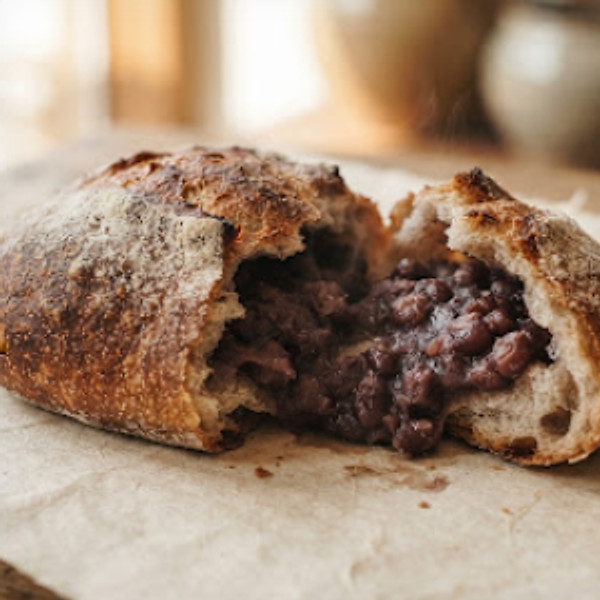
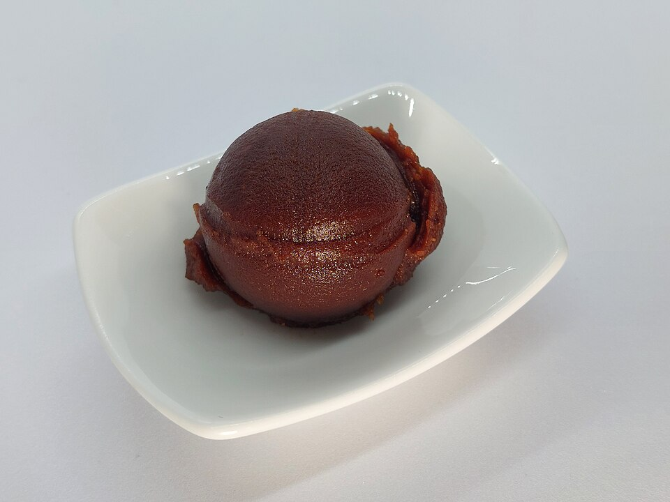
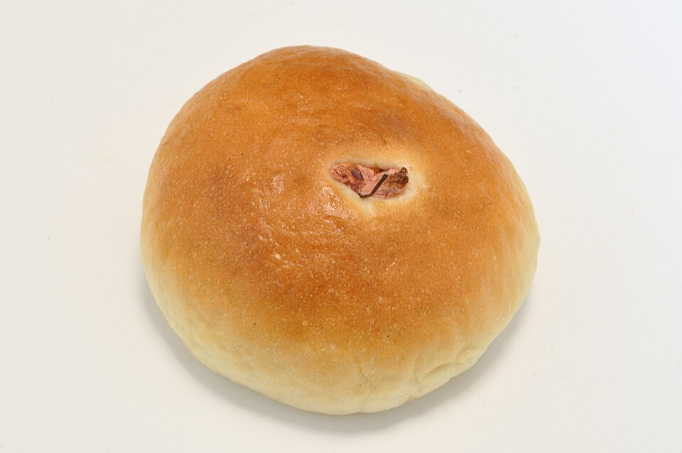
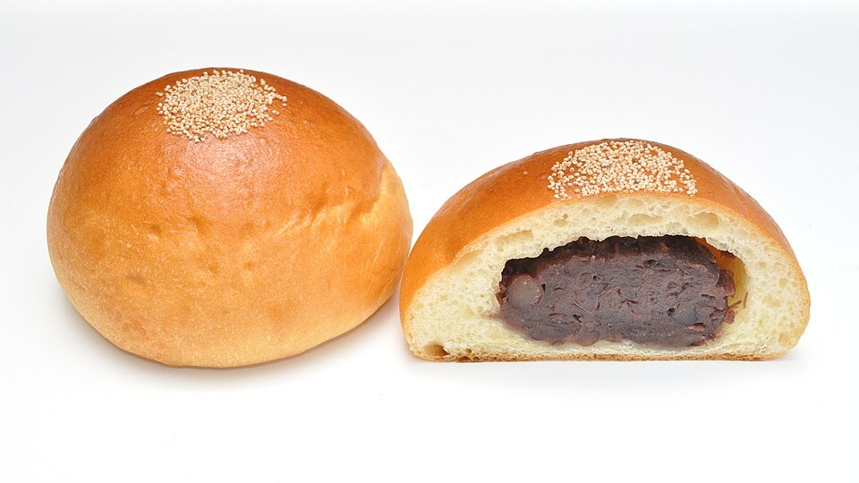
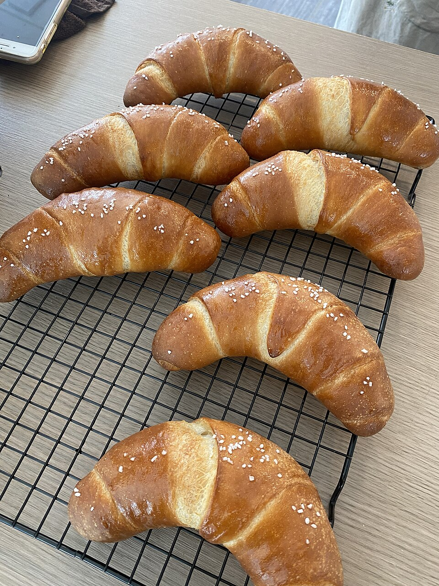
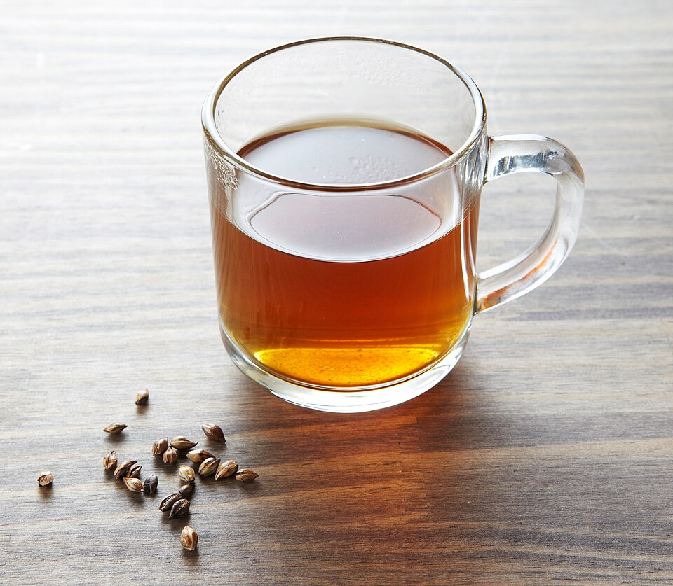
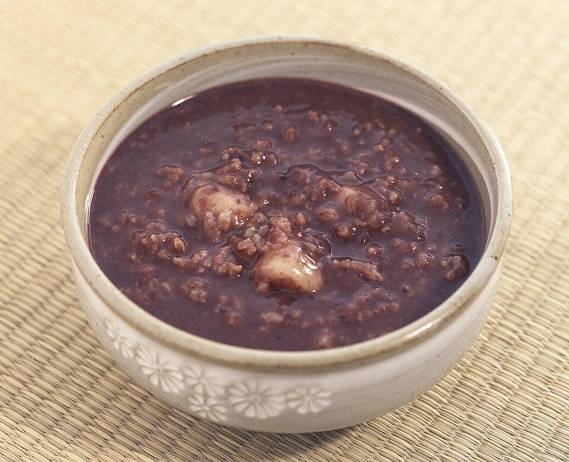

제일 앞줄

거친 단팥빵
2,800원매일
할머니 방식 그대로. 팥을 완전히 으깨지 않고 절반은 알갱이째 남깁니다.
“씹는 맛이 있어야 팥빵이지.”
말 대신 갓 나온 빵으로 인사하는 시간입니다. 오전 9시에 문을 열고, 팥이 떨어질 때까지 엽니다.
다 팔린 날엔 작은 수첩에 이름을 적어둡니다. 다음 달 그날, 문 열자마자 그분 몫부터 따로 빼놓습니다.
보리차는 나무 진열대 옆 주전자에 늘 있습니다. 셀프입니다.
01
효율은 훨씬 좋아지고 하루에 만들 수 있는 양도 몇 배는 늘 겁니다. 근데 그러면 이게 더 이상 할머니 단팥빵이 아니게 됩니다. 그냥 단팥빵이 되는 거죠.
02
설탕을 마지막에 넣고 눌어붙기 직전까지 졸입니다. 그래서 가게 냄새가 달큰하면서도 살짝 탄내가 섞여 있습니다. 할머니는 그 순간을 “팥이 웃는다”고 하셨습니다.
03
호두 단팥빵이 다 팔린 날에도 억지로 권하지 않습니다. “거친 단팥빵도 똑같이 손으로 으깬 거예요.” 기다림을 서운함으로 남기고 싶지 않아서입니다.
할머니는 겨울마다 팥을 삶으셨습니다.
그 냄새가 집안에 며칠씩 배어 있었습니다.
회사 다닐 때, 매일 아침 출근길에 동네 단팥빵집을 지나쳤습니다. 그 냄새 맡는 게 하루 중 유일한 위안이었습니다. 그런데 정작 왜 그 가게가 좋았는지 생각해보면, 빵 때문이 아니었습니다. 할머니가 만들어주시던 단팥빵 생각이 나서였습니다. 할머니 돌아가시고 나서, 그 냄새를 다시 맡을 곳이 없더군요. 그래서 상상 속에서라도 차려보고 싶었습니다.
“김이 모락모락 나는 걸 지켜보며 부엌을 알짱거리면,
할머니는 항상 맛보라고 하셨습니다.”
01
문에 달린 종.
02
진열대 뒤가 아니라 입구 바로 옆에. 팥 삶는 걸 직접 봤으면 해서요.
03
달큰하면서도 살짝 탄내. 눌어붙기 직전까지 졸이거든요.
04
오래된 가요 프로그램. 할머니가 늘 들으시던 채널 그대로.
05
종류별로 대략 30개씩 쌓여 있습니다.
손님이 무쇠솥 앞에 서서 들여다볼 때, 저는 말을 걸지 않습니다. 빙그레 웃으며 손님들이 행복하게 빵을 고르는 걸 지켜봅니다.
“우리 엄마도 이렇게 만들었는데”
친정어머니가 이북 실향민이셔서, 팥소를 이렇게 거칠게 으깨는 방식으로 만드셨다고 합니다. 요즘 빵집은 다 곱게 갈아서 부드러운데, 저희 집만 일부러 거칠게 남겨두거든요. 박여사님한테는 그 식감 하나가 엄마를 만나는 시간인 겁니다.
“화요일마다 오시는 이유를 여쭤본 적은 없어요. 그냥 압니다.”
새 메뉴 홍보도, 할인 안내도, 이벤트 소식도 보내지 않습니다.
호두 나오는 주와 일찍 닫는 날만 알려드립니다.






거창하게 예약 시스템을 만들 것도 없이,
그냥 손으로 적은 이름 하나면 되더군요.
“여사님, 적어주셔서 고맙습니다.
첫 판 나오면 여사님 거로 빼놓을게요.
편하실 때 들르세요.”